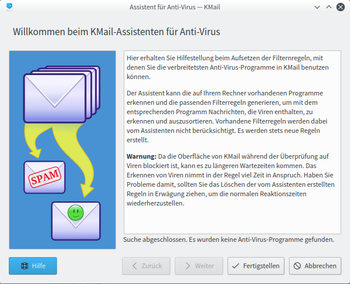

Virenscanner
Dieser Artikel wurde für die folgenden Ubuntu-Versionen getestet:
Ubuntu 16.04 Xenial Xerus
Ubuntu 14.04 Trusty Tahr
Normalerweise ist unter Ubuntu Linux und in KMail kein Virenscanner nötig. Möchte man dennoch eintreffende E-Mails auf Viren überprüfen (bspw. damit man empfangene Viren nicht an Windows-Nutzer weiterleitet), kann man verschiedene Virenscanner in KMail integrieren. Jedoch ist dabei anzumerken, dass die Virensuche etwas Zeit in Anspruch nimmt und in dieser Zeit KMail blockiert werden kann. Die automatische Konfiguration kann bei der Verwendung der folgenden Anti-Virenprogramme verwendet werden:
ClamAV - Open Source Virenscanner (in den Ubuntu-Quellen enthalten)
Sophos Anti-Virus
 - Kommerzieller Virenscanner
- Kommerzieller Virenscanner
Einrichtung¶
|  |
| Virusscanner-Assistent |
Die Einrichtung des Virenscanners geschieht, wie die Konfiguration des Spamfilters, mit Hilfe eines Assistenten. Dieser wird über den Menüeintrag "Extras → Anti-Virus Assistent ..." gestartet.
Im ersten Schritt werden alle vom Assistenten auf dem Rechner gefundenen Virenscanner aufgelistet. Hier wählt man den gewünschten, zuvor installierten, Virenscanner aus und  auf die Schaltfläche "Weiter". Anschließend muss man die Option "Nachrichten mit Anti-Virus-Programmen überprüfen" aktivieren. Je nach Bedarf kann zusätzlich ausgewählt werden ob und in welchen Ordner mit einem Virus befallene E-Mails verschoben werden sollen. Zum Abschluss der Konfiguration, bestätigt man die Angaben mit auf die Schaltfläche "Fertigstellen".
auf die Schaltfläche "Weiter". Anschließend muss man die Option "Nachrichten mit Anti-Virus-Programmen überprüfen" aktivieren. Je nach Bedarf kann zusätzlich ausgewählt werden ob und in welchen Ordner mit einem Virus befallene E-Mails verschoben werden sollen. Zum Abschluss der Konfiguration, bestätigt man die Angaben mit auf die Schaltfläche "Fertigstellen".
Individuelle Konfiguration¶
Im Normalfall ist nach der Verwendung des Assistenten keine manuelle Nacharbeit nötig. Für spezielle Anwendungsfälle oder bei der Verwendung von Virenscannern, die nicht vom Assistenten unterstützt werden, kann man den Virenscanner über den Menüpunkt "Einstellungen → Filter einrichten ..." anpassen.
Virenscanner entfernen¶
Möchte man einen mit dem Assistenten erstellten Virenscanner wieder entfernen, öffnet man im Menü "Einstellungen → Filter einrichten ..." und löscht alle entsprechenden Filter (in der Regel sind es mehrere, die automatisch erstellt wurden).
Links¶
KMail - Hauptartikel
KMail/Mailoptionen - E-Mail-Formatierung, Rechtschreibprüfung, Signatur, X-Faces, Textbausteine, etc.
KMail/Filter - Nachrichten-, POP- und Spamfilter einrichten
KMail/Verschlüsselung - Einrichtung einer digitalen Signatur und E-Mail-Verschlüsselung
- Erstellt mit Inyoka
-
 2004 – 2017 ubuntuusers.de • Einige Rechte vorbehalten
2004 – 2017 ubuntuusers.de • Einige Rechte vorbehalten
Lizenz • Kontakt • Datenschutz • Impressum • Serverstatus -
Serverhousing gespendet von